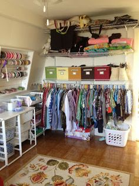

Organizing
Going into people's homes to move and remove their personal belongings creates an intimate relationship. This relationship is built on trust .... our clients trust that we know what we're doing, that we respect them and their belongings, that we will help them reach the goals that have been set, and that we respect their privacy.
We have been organizing since 2004 and have experience in many, many different types of organizing jobs. Our jobs involve:
-

- Making a beautiful home function and flow better for the family
- Helping get a home office in shape to run a home-based business, pay bills on time, or find critical paperwork
- Unpacking boxes from a move the occurred 7 years ago Cleaning out a basement or attic Downsizing from a 4 bedroom home to a 1 bedroom apartment
- Setting up a craft room
- Organizing closets and drawers
- Organizing kitchen cupboards and pantries
- Bringing in a dumpster for a large clean-out
- Cleaning out a garage Setting up a shed or workshop Managing electricians, plumbers, painters, handymen, and other contractors to bring a house back into working order
- Home condemnations
- Hoarders
Consulting
Some clients are ready, willing, and able to do their own organizing but don't know where or how to get started. Some clients need hands-on help at the beginning of the job and are able to finish on their own. These clients are good candidates for a consulting relationship with us.There are many ways to be one of our consulting clients but the most typical path is to have us come in and create an organizing strategy. Once we've all agreed on the strategy, the client begins to implement the strategy. At agreed upon intervals, we stop in and see how the job is progressing. If it's going well, we are our client's biggest cheerleader. If it's not going well, no one's in trouble! We figure out whether life interfered with the plan and it looks like things are getting back on track or if the plan needs revision. If at any point the client needs us to jump in for some hands-on help, we're there!
Downsizing
There are many reasons people down-size but one of the most common reasons we see is senior citizens moving from a home they have spent many years into a much smaller home. This is a challenging time for most people! Memories have to be picked through and some discarded. There isn't room for all the favorite pieces of furniture, artwork, kitchenware, and clothing.We provide the compassionate help that is needed at this time. We help our seniors figure out what the best choices are for them regarding what to move, what to give away, and where to give it in order to make the process a little easier.
We listen, we honor, and we work hard to keep the process moving along as it needs to. WE LOVE SENIORS!
Working with children
WE LOVE WORKING WITH CHILDREN! It's exciting to teach good organizing habits to youngsters so they can benefit from an organized approach to home and school. SOME of the ways we can help your child get organized include:
- Hands-on help de-cluttering and organizing a bedroom
- Learning how to figure out which books and toys can be shared with someone else
- Teaching cleaning skills
- Teaching pick-up games and tricks to help when we're not there to lend a hand
- Showing your child WHY an organized bedroom and backpack are better than messy ones
Preparing for the Exterminator
Yuck!! Bed bugs! Cockroaches! Don't worry--it's easy to get these critters and more people than you might imagine suffering with them. The good news is that you can get rid of them!No, Something Better doesn't get rid of bugs. Exterminators do that. However, we do help the work exterminators do to be more effective. Bugs like to hide (and breed!) in clutter. Unfortunately, the clutter also blocks the exterminating products that are used. Bring us in before the exterminator to get rid of the clutter (especially in key places like the kitchen, closets, and around beds/couches). The exterminator will be able to treat all the necessary spots in your home and that treatment will be much more effective.
Packing
 You may need help packing up some or all of the rooms in your house in order to make a move. Or maybe you just want to pack up some things now so your house shows better when you place it on the market. No problem! We'll pack up as much as you would like us to so that you can focus on the many other things demanding your attention. We'll even bring in the boxes and packing material if you would like.
You may need help packing up some or all of the rooms in your house in order to make a move. Or maybe you just want to pack up some things now so your house shows better when you place it on the market. No problem! We'll pack up as much as you would like us to so that you can focus on the many other things demanding your attention. We'll even bring in the boxes and packing material if you would like.
Unpacking
If you've just moved in and would like unpacking, we can give you that helping hand. If you already know where everything is going to go, great! If not, we're glad to set up your kitchen, bedroom, or any other room for you.
Click here for Organizing FAQs